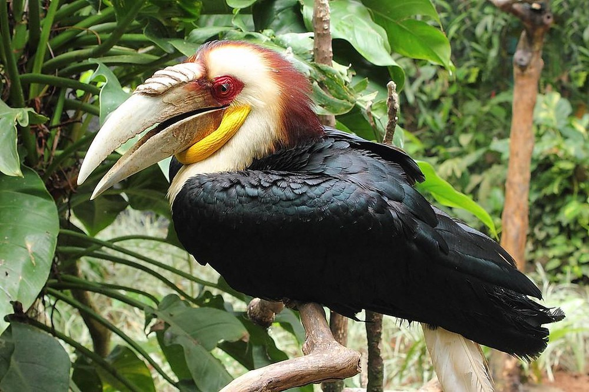
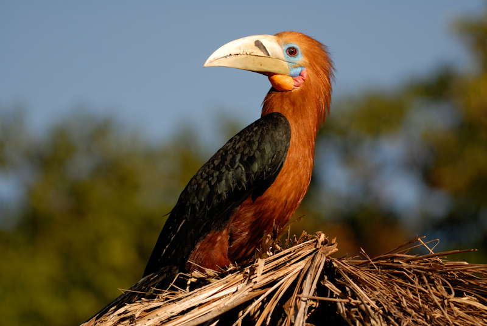
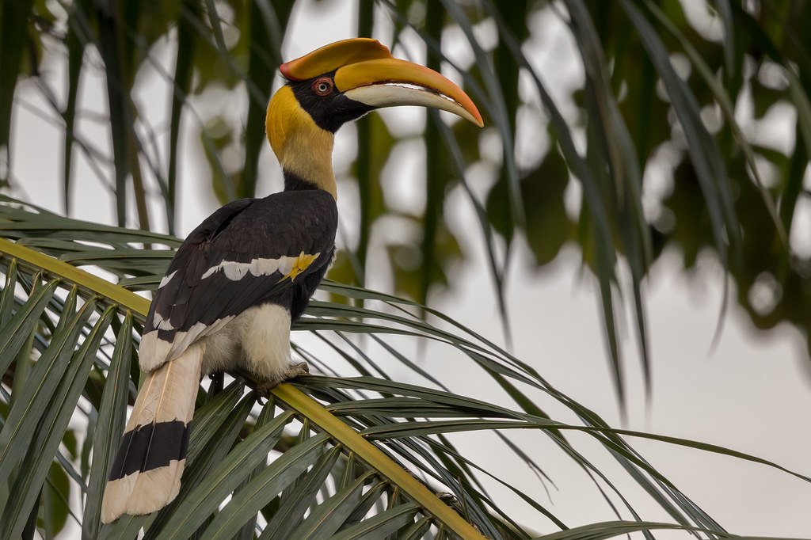

Rhyticeros undulatus is a species of bird in the Bucerotidae family.
Around the world, striped shale is distributed in Myanmar, Thailand, Malaysia, Indonesia, India and Bhutan. In Vietnam, the stripfish is found in the central and southern regions.
The adult rhyticeros undulatus has a white tail, the skin of the orange throat is bright orange with a black stripe in males, and dark green in females. Rhyticeros undulatus breed in February - May, lasting up to 120 days. Incubation period 40 - 45 days and usually only see one.
The main food of the stripfish is the fruits of the forest, in addition they also eat more insects (about 5% of the amount of food). Rhyticeros undulatus lives and nurtures, feeding in the primeval forest, moist evergreen secondary forest that is less exploited in valleys, hilly areas of 100-1500m high and mangrove forests.
Rufous-necked Hornbill is a species of Hornbill found in the forest at an altitude of 150-2,200 meters (490-7,200 ft) in Bhutan, northeastern India, Burma, southern Yunnan province, southeast Tibet, Northern and Western Thailand, Northern Laos and Northern Vietnam. It has been greatly reduced due to habitat loss and hunting, and it has been completely gone from Nepal. It is estimated that there are now less than 10,000 individuals left. With a length of about 117 cm (46 in). , it is one of the largest Bucerotine hornbills.
In general, the coat is black on the tips of the primary wing feathers and the white tail in the male has a head, neck, chest and belly, dark brown ribs. The head has fairly long crests. Cheeks, chin and throat hairless. The skin of the throat is watered red, the skin around the eyes and face are pale blue. Light yellow or white beak. Hats on rafts. The edges are folded. Reddish brown or pink eyes. Light brown or hazel feet.
This species lives in and nest in the jungle, where there are many large trees on the height of 700 - 1800m (Round, 1988). Often shouting while foraging. It nests in large, tree-holes (holes) and the mouth of a nest is covered with a plaster plaster. It restrains itself in the nest until the birds are relatively well developed, relying on the food the males bring through the cracks in the plaster. During this period the female underwent a period of complete hair loss. Each litter consists of 1 to 2 eggs and is incubated for 38-40 days. In Vietnam: Previously met only in Lai Chau (Muong Muon). It is a rare and beautiful bird. There is scientific value and aesthetic.
Buceros bicornis is the largest member of the Hornbill family. Hornbill live in the forests of India, Southeast Asia and southern China.
Buceros bicornis is a large bird, which can reach 95–120 cm (38-47 inches) long, with wingspan up to 152 cm (60 inches) long and weighing 2.15–4 kg (4,7-8.8 lb). The most striking feature of the Hornbill is the bright yellow and black beak on the top of its large bill. The hollow cap of keratin or keratin (a fibrous protein) extends from the upper part of the beak to the skull and is unknown of the purpose, although it is believed to be the result of sex selection. This beak hat accounts for 11% of the bird's body weight. The female buceros bicornis is smaller and has blue eyes instead of red eyes. Hornbill embers preen to apply yellow slime to primary wing feathers as well as beaks to give them a bright yellow color.
In nature, the food of Buceros bicornis is mainly fruits. It also feeds on mammals, birds, snake lizards and small insects.
The female buceros bicornis nests in holes in the trunks of large trees and the mouth of the nests is covered with a plaster plaster. It restrains itself in the nest until the birds are relatively well developed, relying on the food the males bring through the cracks in the plaster. During this period the female underwent a period of complete hair loss. Each litter consists of 01 to 02 eggs and is incubated for 38 - 40 days. Buceros bicornis forms monogamous couples but lives in groups of 2 - 40 individuals.
8 Ton That Thuyet, My Dinh, Tu Liem,
Ha Noi, Viet Nam.
0966469746 (Do Van Huan)
0666729716 (Nguyen Minh Nghia)
0522697743 (Duong Thanh Binh)
0849818969 (Le Van Phuong)
0373485924 (Nguyen Thanh Lam)
KawasakiZoo@gmail.com